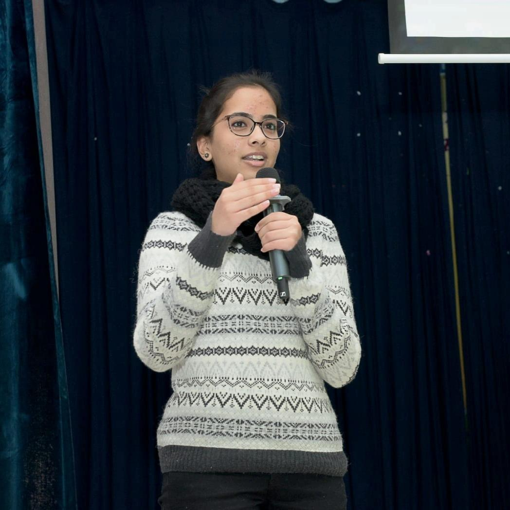
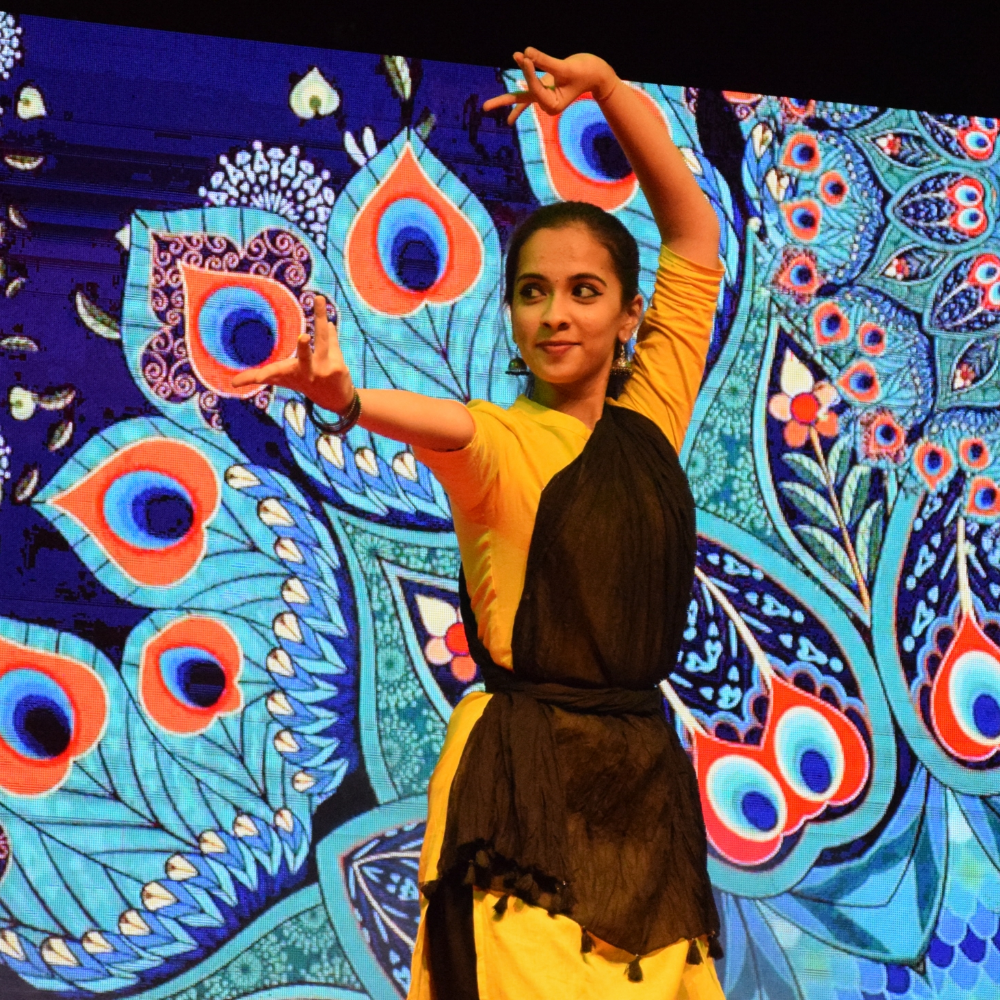

I am Mallika
I am a CSE undergraduate at the International Institute of Information Technology Hyderabad.
I am a keen learner, with an equal bent for science and arts. This blend, I believe, makes me
disciplined, balanced, composed and helps me pay attention to fine detail.
I completed my schooling from Delhi Public School, Kuwait.
I love venturing out in new domains and trying different areas alongside learning new
things. I am an undergraduate research student at Precog IIIT Hyderabad and am pursuing my
honours under Prof. PK. I am interested in exploring the applications of NLP techniques and
methodolgies unde the computational social sciences domain.
I am an able leader and aim for perfection in everything I do.
Been inspired for the past many years, dance is an art form I am extremely passionate about. I
am a classical dancer and have trained in Bharatanatyam classical for over 15 years now.
I consider it a medium to express myself. Indeed, dance
is like dreaming with your feet!
The creativity in me extends to other areas as well. I am one of the Creative Directors for
Ping! , the IIITH magazine. I enjoy using digital tools to design and create content that is
aesthetic and appealing.
